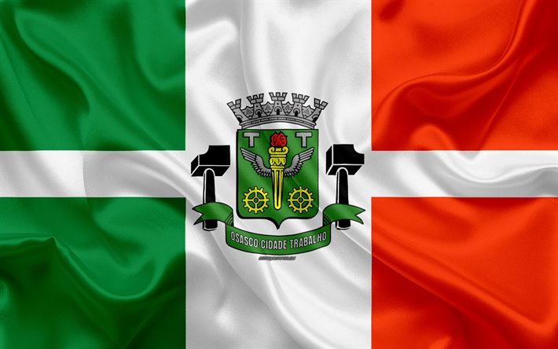

As 10 Cidades Mais Populosas de São Paulo
![Bandeira do Estado de São Paulo hasteada enquanto balança ao vento em um dia claro de céu limpo, a bandeira é um retângulo com listras brancas e pretas todas do mesmo tamanho, listras essas que são do mesmo tamanho e estão na horizontal, também há um retângulo menor no quanto superior esquerdo, esse retângulo menor é vermelho e nele contem quatro estrelas amarelas uma em cada ponta do retângulo menor, e no meio desse retângulo menor há um circulo branco, com o formato da região brasileira em azul dentro desse circulo](img/historia.jpg)
O estado de São Paulo tem mais de 44,04 milhões sendo assim o estado mais populoso do Brasil, então vamos
mostrar agora as 10 cidades com maior quantidade de habitantes.
São Paulo - 12.176.866 habitantes

São Paulo, centro financeiro do Brasil, está entre as cidades mais populosas do mundo, com diversas
instituições culturais e uma rica tradição arquitetônica. Há prédios simbólicos como a catedral neogótica,
o Edifício Martinelli, um arranha-céu inaugurado em 1929, e o Edifício Copan, com suas linhas curvas projetadas
pelo arquiteto modernista Oscar Niemeyer. A igreja em estilo colonial do Pátio do Colégio marca o local onde
os padres jesuítas fundaram a cidade em 1554. Saiba Mais...
Guarulhos - 1.365.899 habitantes
Guarulhos foi fundada em 8 de dezembro de 1560 pelo Padre Jesuíta Manuel de Paiva, com o nome de
Nossa Senhora da Conceição, em um local até então habitado pelos índios Guarus, da tribo dos Guaianases.
Apenas em 1906 uma Lei Estadual determinou que Guarulhos recebesse a denominação de cidade. Saiba Mais...
Campinas - 1.194.094 habitantes
Campinas é uma cidade no sudeste brasileiro, a noroeste de São Paulo. A sua Catedral Metropolitana
possui um interior em madeira de jacarandá e um museu de arte sacra. A Torre do Castelo, anteriormente
uma torre de água, proporciona vistas panorâmicas. No norte, O Parque Portugal inclui um planetário
e elétricos restaurados de inícios do século XX. Na extremidade do parque, o Museu do Café recorda a
história da cidade enquanto produtora de café. Saiba Mais...
São Bernardo do Campo - 833.240 habitantes

São Bernardo do Campo é um município brasileiro do estado de São Paulo, na Mesorregião Metropolitana de São Paulo e
microrregião de São Paulo. Pertence a Zona Sudeste da Grande São Paulo, A origem da cidade remonta a 1553, quando é oficializada
a Vila de Santo André da Borda do Campo, fundada pelo português João Ramalho, junto a seu sogro Tibiriçá. A Vila foi o primeiro núcleo
de povoamento do território brasileiro fora do litoral. O nome do município provém da Fazenda de São Bernardo, fundada pelos monges beneditinos
em 1717, origem da ocupação moderna da cidade. Saiba Mais...
Santo André - 716.109 habitantes

Santo André é um município brasileiro da Região do Grande ABC, localizado na Zona Sudeste da Grande São Paulo, parte da Região
Metropolitana de São Paulo, Esta vila foi fundada por João Ramalho, que se uniu à índia Bartira, filha do cacique Tibiriçá, da tribo dos
Guaianases. Em 8 de abril de 1553, o seu pedido de transformar a região em que vivia em Vila foi atendido pelo governador-geral Tomé de Sousa. Saber Mais...
São José dos Campos - 713.943 habitantes

São José dos Campos é um município brasileiro no interior do estado de São Paulo. Está situado no Vale do Paraíba Paulista,
a leste da capital do estado, distando desta cerca de 81 km. São José dos Campos foi elevado à categoria de vila em 1767. No decorrer do
século XIX a agricultura desenvolveu-se no município, com destaque para o café, principalmente a partir da década de 1880. Porém na segunda
metade do século XX a indústria ganhou força, sendo este o momento que a cidade descobre sua vocação para a área da tecnologia. Saber Mais...
Osasco - 696.850 habitantes

Osasco é um município brasileiro localizado na Região Metropolitana de São Paulo, no estado de São Paulo, no Brasil.
Nascido como um bairro da capital paulista no final do século XIX, tornou-se município emancipado após um plebiscito em 1962.
Possui importante atividade econômica nos setores industrial, comercial e de serviços. Conforme o censo do IBGE, com dados de 2017,
Osasco possui o 6º maior Produto Interno Bruto do Brasil e o 2º maior do Estado de São Paulo, ficando à frente de muitas capitais
estaduais brasileiras, como Salvador, Fortaleza e Recife, sendo a cidade não capital com o mais alto PIB da nação naquele ano. Saber Mais...
Ribeirão Preto - 694.534 habitantes

Ribeirão Preto é um município brasileiro sede da Região Metropolitana de Ribeirão Preto, no interior do estado de São Paulo,
Região Sudeste do país. Pertence à Mesorregião e Microrregião de Ribeirão Preto, localizando-se a nordeste do estado, distando da Capital
do Estado cerca de 315 km. Foi fundada em 1856, neste período a região recebia muitos mineiros que saíam de suas terras já esgotadas para
a mineração e procuravam pastagens para a criação de gado. No começo do século XX, a cidade passou a atrair imigrantes, que foram trabalhar
na agricultura ou nas indústrias abertas na década de 1910. Saber Mais...
Sorocaba - 671.186 habitantes
A cidade é um importante polo industrial do estado de São Paulo e do Brasil, sendo que sua produção industrial chega a mais
de 120 países, atingindo um PIB acima dos R$ 32 bilhões, o décimo nono maior do país, a frente de capitais como São Luís, Belém,
Vitória, Natal e Florianópolis. As principais bases de sua economia são os setores de indústria, comércio e serviços, com mais
22 mil empresas instaladas, sendo mais de duas mil delas indústrias. Saber Mais...
Mauá - 468.168 habitantes

Mauá é um município da Região Metropolitana de São Paulo, no estado de São Paulo, no Brasil. Pertence à região do ABC Paulista,
na Zona Sudeste da Grande São Paulo, a cidade foi fundada em 8 de dezembro de 1954 há 68 anos. Saber Mais...